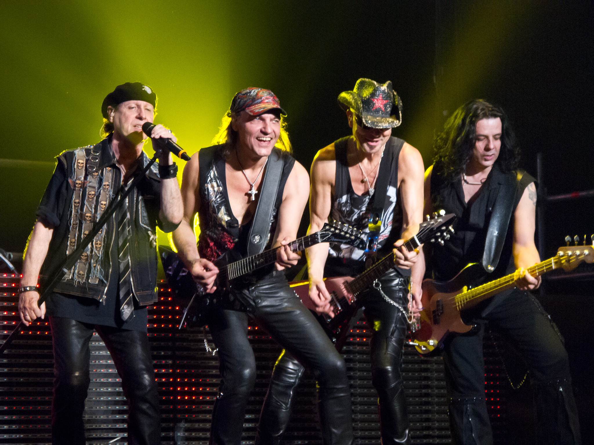

Scorpions (рус. Скорпионз[12], с англ. — «Скорпионы») — немецкая англоязычная рок-группа, созданная в 1965 в Ганновере[13]. Для стиля группы характерны как классический хард-рок, так и лирические гитарные баллады. Scorpions являются самой популярной рок-группой Германии и одной из самых известных в мире, продав более 100 миллионов копий своих альбомов (по состоянию на 29 января 2010)[14]. Коллектив занимает 46 место в списке «Величайших артистов хард-рока» по версии VH1[15]. С 2015 года группа гастролировала с юбилейным туром 50th Anniversary — World Tour 2015/2016. В 2017 выступают с туром Crazy World Tour.
Группа Scorpions была основана в 1965 году Рудольфом Шенкером. В 1969 к ней присоединились младший брат основателя Михаэль Шенкер и вокалист Клаус Майне. По утверждению Майне, каждая заработанная ими копейка тратилась на группу; из этих же соображений Шенкер уговаривал его бросить курить. На первые сбережения группа приобрела Mercedes 300SEL и ездила на нём на гастроли, проводя в пути до восьми часов.[16] Решение петь на английском языке, по утверждению Майне, было принято по двум причинам: влияние таких групп как The Rolling Stones, The Beatles, The Who, The Kinks и стремление Scorpions — поколения послевоенной Германии — стать частью международного музыкального мира[17]. Главные немецкие рок-группы начала 70-х — Can, Amon Duul, Kraftwerk — играли в то время экспериментальную музыку. А британский и американский рок Scorpions немецкая пресса поднимала на смех[16]. На международной хард-рок сцене группа появилась в 1972 году, когда выпустила свой первый альбом под названием Lonesome Crow. Ближе к концу своего тура в 1973 году, где они сопровождали популярных в ФРГ лондонских хард-рокеров UFO, Михаэлю Шенкеру предложили стать гитаристом этой группы, и он согласился. Стать новым гитаристом Scorpions предлагали музыканту Ули Роту, но тот предпочёл остаться в группе Dawn Road, где также играли Франсис Бухгольц (бас), Ахим Киршинг (клавишные) и Юрген Розенталь (ударные). Рудольф Шенкер решил присоединиться к этой группе. Затем в неё пригласили и Клауса Майне. В итоге прежние Scorpions исчезли, а группа Dawn Road взяла себе это, уже известное в Германии, имя. В обновлённом составе группа записала диск Fly to the Rainbow. В 1974 году место Розенталя занял Руди Леннерс.
Британская пресса, освещавшая гастроли Scorpions в 1975 году, принимала в штыки немецкую рок-группу, поющую на английском языке:[16] Английские журналы писали тогда — «Это блицкриг!» — и прочее дерьмо на военную тематику. <..> Конечно, это нас задевало, но мы хотели показать, что мы — новое поколение из Германии, что мы пришли с гитарами, а не с танками. Мы чувствовали, что благодаря нам появляются новые мосты между странами и поколениями. Мы меняли отношение людей — и это было очень важно для нас. — Рудольф Шенкер, интервью Classic Rock, 2015 год Последующие альбомы In Trance и Virgin Killer показали, что Scorpions нашли свой уникальный стиль — необычайно мощные риффы, витиеватые гитарные соло и мелодические вокальные линии. Популярность Scorpions в Европе и Азии росла, группа много гастролировала. Но главной задачей для Scorpions был успех в Америке. В 1977 году Михаэль Шенкер (выступавший тогда с UFO) позвонил брату из Лос-Анджелеса и спросил, почему они до сих пор не выступают в Америке — группа Van Halen, которую он наблюдал в клубе, исполняла «Speedy’s Coming» и «Catch Your Train». Последовал ответ: «Что? Мы тотчас же приедем!»[16] Альбом Taken by Force — к этому времени Леннерса заменил Герман Раребелл — характерен найденным Scorpions «фирменным знаком» — мощными балладами. Альбом коммерчески оказался весьма успешным, однако Ули Джон Рот (обожавший манеру игры Джими Хендрикса) видел свой собственный творческий путь, отдельный от пути группы. После турне в поддержку Taken by Force (во время которого Scorpions записали концертный альбом Tokyo Tapes, ознаменовавший завершение первой фазы их карьеры) он мирно ушёл из Scorpions и организовал свою группу Electric Sun
На место Рота взяли Маттиаса Ябса, но он временно был вынужден покинуть группу — Михаэль Шенкер рассорился с UFO и вернулся в Scorpions. Его гитара звучит в трёх композициях на альбоме Lovedrive, он участвовал и в туре, в котором группа прокатывала этот альбом. Но в 1979 году Михаэль окончательно покинул Scorpions, основав свою группу MSG, и на место соло-гитариста Scorpions окончательно вернулся Ябс. Альбом Lovedrive стал настоящим прорывом для группы, именно с его выходом к Scorpions пришёл международный успех, в том числе и в Америке.[16] Манчестер, 1980 В 1980 году группа записывает свой 7-й по счёту альбом — Animal Magnetism. Альбом получился очень «живым» — в лучших традициях хард-рока того времени, — и по сей день является одной из «визиток» Scorpions. В период с 1980 по 1981 группа много гастролировала. У Клауса Майне начинаются серьёзные проблемы с горлом[18], и он переносит операцию на голосовых связках. Новый альбом Blackout получает платину в США и Канаде[19][20] и попадает в Top 10 журнала Billboard, как и следующий альбом Love at First Sting — именно в этот альбом и вошла известная баллада «Still Loving You». По словам Майне, гастроли по Америке в 80-х были «одной непрекращающейся вечеринкой», однако при этом ни у кого из участников группы не было проблем с употреблением наркотиков. На US Festival в Калифорнии в 1983 году хэдлайнер фестиваля Van Halen, перед выступлением которых должны были выступать Scorpions, запретил использовать на сцене какие-либо спецэффекты; Scorpions нашла чем ответить,наняв 5 истребителей, которые летали над аудиторией и долиной Сан-Бернардино. В 1984 году Scorpions трижды собирали аншлаг в Мэдисон-Сквер-Гарден[16]. Концертный альбом World Wide Live 1985 года демонстрирует всё лучшее, чего достигла группа в течение второй фазы своей карьеры. Качественно записанный и спродюсированный, он в течение четырёх месяцев занимал 14 место в американских чартах. Перед выпуском Savage Amusement в 1988 году — их первого студийного альбома за четыре года — группа взяла заслуженный отпуск. Альбом имел огромный успех, достиг пятой позиции в США и первых в европейских чартах. В 1988 году группа впервые посещает СССР и даёт 10 аншлаговых концертов в Ленинграде (а также спонтанно выступает в Ленинградском рок-клубе)[21][22]. В 1989 году группа перешла на сотрудничество с Phonogram Records и тем завершила 15-летнюю работу с продюсером Дитером Дирксом. В августе того же года Scorpions с успехом выступают на Московском международном фестивале мира, став одной из первых западных рок-групп, давших концерт в СССР[23]. После этого вышел их самый успешный на сегодняшний день альбом Crazy World, а песня из него «Wind of Change», посвящённая перестройке в СССР, занимала первые места в хит-парадах всего мира и стала первой песней Scorpions с более чем миллионом продаж. Альбом продюсировал Кит Олсен, в связи с чем Scorpions обрели новый звук, при этом не изменив своим творческим ориентирам и основам. За год до релиза «Wind of Change» рухнула Берлинская стена, а группа выступила на Потсдамской площади с Роджером Уотерсом и другими музыкантами в шоу The Wall Live in Berlin.В 1992 году Бухгольц ушёл из группы, постоянным бас-гитаристом стал Ральф Рикерманн. В 1993 году выходит альбом Face the Heat. В 1994 группа выпустила сингл «White Dove», основой для которого послужила песня 1969 года «Gyöngyhajú lány» («Девушка с жемчужными волосами») венгерской рок-группы Omega. В 1996 году Scorpions записали альбом Pure Instinct. После выхода альбома группу покидает Герман Раребелл, его место занимает Джеймс Коттак. Летом 1997 года группа подготовила двойной CD-сборник своих лучших песен, однако, когда дело дошло до печати тиража, выяснилось, что дистрибьюторские сети США отказываются заниматься альбомом. В результате было принято компромиссное решение: часть тиража отправилась в Нидерланды и Швецию, которые не имели ничего против провокационного изображения на обложке, а американская версия вышла в серой картонной коробке.